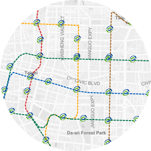

Home
居住環境概述
安全性
健康性
寧適性
便利性
全部圖層
房價資訊
操控地圖
底圖
衛星影像
街道地圖
街道衛星
綠地景觀
黑底底圖
白底底圖
輔助圖資
區界圖
里界圖
居住環境概述
在房價高漲的年代
你願意花一坪100萬的價格住在噪音環境內嗎？
早在1961年
聯合國世界衛生組織對於居住環境有四個面向的定義
往後許多研究也從這幾個面向作為出發點，發展出各種評估指標
本地圖將使用這四個面向相關圖層作呈現：
點選查看資料清單
以生命財產作為對象，提供居民安全感
公害與其產生設施，與醫療設施之普及
提升居民心理及生理上之環境舒適度

大眾運輸與公設等可接近性
Data list
安全性
以生命財產及生活為對象，使之免於恐懼中。
其中可以分成兩個因素如下：
人為因素
舉例：治安好壞、交通安全、火災發生等
自然因素
舉例：風災淹水、斷層帶、土壤液化潛勢等
圖層資料（人為）：
臺北市住宅竊盜點位資訊
臺北市汽車竊盜點位資訊
臺北市事故點位座標
圖層資料（自然）：
臺北市歷年積水紀錄圖
臺北市土壤液化潛勢圖
Data list
健康性
健康乃人類幸福之根源，健康的居住環境應避免過大的噪音、空氣汙染等公害，並使醫療設施普及、預防傳染疾病發生。
*鄰避設施所涉及的層面可能包含健康性與寧適性，當鄰避設施實質上影響生理層面，屬於健康性的範疇。
圖層資料：
公害陳情案件分佈位置圖
臺北市公私立醫療院所
臺北市加油站及加氣站分布（*鄰避設施）
Data list
寧適性
又稱為舒適性
提供心理與生理上能產生愉悅、舒適的感覺，也包括居民的素質、鄰里關係及社經條件。
*鄰避設施所涉及的層面可能包含健康性與寧適性，當鄰避設施實質上影響心理層面，屬於寧適性的範疇。
圖層資料：
臺北市各級學校分布圖
臺北市公園分布圖
臺北市各村里人口數
臺北市各村里所得
Data list
便利性
主要可分為交通上的便利性與公設、民生必需的易達性。除了設施分布，節點間的傳輸效益也常成為探討指標
本網頁暫時以站位節點作為呈現，運輸離尖峰的統計量不在這次呈現的範圍中。
圖層資料：
大眾捷運系統車站點位圖
大眾捷運系統路網圖
公共自行車即時資訊
Data list
Map Area